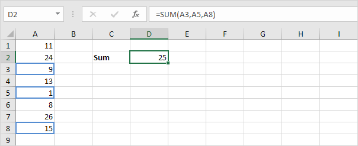
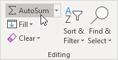

Jumlah
Jumlah Range | Jumlahkan Seluruh Kolom | Jumlahkan Sel yang Tidak Bersebelahan | JumlahOtomatis | Jumlahkan Setiap Baris Ke-N | Jumlahkan Bilangan Terbesar | Jumlah Range dengan Kesalahan
Gunakan fungsi SUM di Excel untuk menjumlahkan Range sel, seluruh kolom, atau sel yang tidak bersebelahan. Untuk membuat rumus SUM yang mengagumkan, gabungkan fungsi SUM dengan fungsi Excel lainnya.
Jumlah Range
Sebagian besar waktu, Anda akan menggunakan fungsi SUM di Excel untuk menjumlahkan Range sel.
Jumlahkan Seluruh Kolom
Anda juga dapat menggunakan fungsi SUM di Excel untuk menjumlahkan seluruh kolom.


Catatan: Anda juga dapat menggunakan fungsi SUM di Excel untuk menjumlahkan seluruh baris. Misalnya, =SUM(5:5) menjumlahkan semua nilai di baris ke-5.
Jumlah Sel yang Tidak Bersebelahan.
Anda juga dapat menggunakan fungsi SUM di Excel untuk menjumlahkan sel yang tidak bersebelahan. Tidak bersebelahan berarti tidak bersebelahan.

Catatan: =A3+A5+A8 menghasilkan hasil yang sama persis!
JumlahOtomatis
Gunakan JumlahOtomatis atau tekan Alt + = untuk menjumlahkan kolom atau baris angka dengan cepat.
Pertama, pilih sel di bawah kolom angka (atau di sebelah deretan angka) yang ingin Anda jumlahkan.

Pada tab Beranda, dalam grup Pengeditan, klik JumlahOtomatis (atau tekan Alt + =).

Tekan Enter.

Jumlahkan Setiap Baris Ke-N
Rumus SUM di bawah ini menggunakan SUM, MOD dan ROW untuk menjumlahkan setiap baris ke-n. Ubah 3 menjadi 4 untuk menjumlahkan setiap baris ke-4, menjadi 5 untuk menjumlahkan setiap baris ke-5, dst.

Catatan: bilah rumus menunjukkan bahwa ini adalah rumus larik dengan mengapitnya dalam kurung kurawal {}. Jangan mengetik ini sendiri. Untuk memasukkan rumus array, selesaikan dengan menekan Ctrl+Shift+Enter.
Jumlahkan Bilangan Terbesar
Rumus SUM di bawah ini menggunakan SUM dan LARGE untuk menjumlahkan angka terbesar dalam suatu Range. Ubah {1,2,3,4} menjadi {1,2,3,4,5} untuk menjumlahkan 5 bilangan terbesar.

Catatan: =LARGE(A1:A11,2) cukup mengembalikan angka terbesar kedua.
Jumlah Range dengan Kesalahan
Rumus SUM di bawah ini menggunakan SUM dan IFERROR untuk menjumlahkan Range dengan kesalahan. Anda juga dapat menggunakan fungsi AGGREGATE di Excel untuk menjumlahkan Range dengan kesalahan.

Catatan: fungsi SUM di Excel secara otomatis mengabaikan nilai teks.